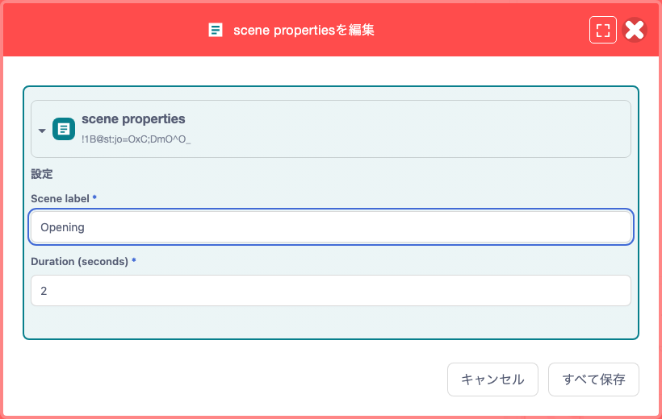
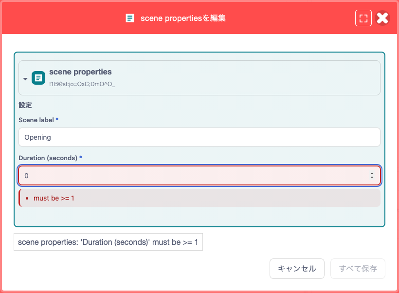
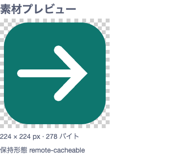

機能ガイド 8/12 · 2026年11月14日更新
拡張のデータと文書を編集する
対応する拡張を使うと、ブロックの値をフォームで編集したり、台本などのYAML文書をタブで開いてコードと並べたりできます。
8.1 ブロックの値をフォームで編集する 一部の機能拡張で利用可能
フォーム編集に対応する拡張では、ブロックの引数を項目ごとの入力欄で編集できます。たとえば、場面名と表示時間を1つのJSON文字列にまとめて持つブロックでも、それぞれを別の欄に入力できます。
拡張の開発者は、保存するデータのJSON Schemaを用意し、対象のブロックと引数を指定して登録するだけで、そのブロック専用のフォームを用意できます。 エディターはスキーマから入力欄を組み立て、必須項目や値の範囲を検証します。
- 対応するブロックをコード領域に置き、ブロックの左端にある「ブロックを編集」アイコンを押します。
- フォームで値を変えます。表示される項目は拡張ごとに異なります。
- 「すべて保存」を押すと、検証に通った値がブロックに反映されます。変更をやめるときは「キャンセル」で閉じます。
- 作品ファイルに残すには、続けて「ファイル」メニューから保存します。

examples/extensions/block-editor.ts）が登録したフォーム。場面名と表示時間を別々の欄に入力します。入力の誤りを、その場で見つける
図のフォームで指定できる表示時間は1〜60秒です。0を入力すると範囲外であることが示され、値を直すまで保存できません。どんな値を受け付けるかは拡張が決めます。

入れ子のブロックを編集する
拡張が親子のブロックを編集対象に登録していれば、同じフォームでそれぞれの値を変えられます。数値・文字列・選択肢の固定入力も、対応していれば専用の欄で編集できます。フォームで保存した変更は、コード画面で「元に戻す」を1回行えば取り消せます。
変更・検証・取消
ブロックへ反映／元に戻す
SB3を手元へ
拡張作者向けの入口とサンプルはフォーム型ブロックエディターの仕様にあります。
8.2 外部YAMLと作品内の文書・ブロックを使い分ける 一部の機能拡張で利用可能
対応する拡張が登録した文書は、「データソース」ブロックのファイルアイコンから開けます。Plus配置では作業領域のタブに表示されます。ブロックの表示名や選べる形式は、文書によって異なります。
文書には、どこから読み込むかを決める「参照元」と、テキストで扱うかブロックで扱うかを決める「形式」の設定があります。参照元を変えられる文書では、「SB3内のファイル」と「外部URL」から選べます。ブロックに変換できるかどうかは、文書を提供する拡張が決めます。
ファイルアイコン
提供元が対応する表現
作品の文書へ反映
外部URLには、ブラウザーからの取得を許可しているHTTPSのURLを指定します。「取得してプレビュー」で内容を確かめてから、「参照元を検証・保存」で適用します。外部の台本を編集したいときは、参照元を「SB3内のファイル」に変えて保存し、作品に取り込んだコピーを編集します。
| 形態 | 文書の置き場所 | 向いている作業 |
|---|---|---|
| 外部YAMLテキスト | HTTPSの配信元。作品には参照先を記録 | 作品と別に管理する台本を読み込む |
| SB3内のYAMLファイル | 原文を作品内のファイルに同梱 | 作品と一緒に渡す。原文を編集する |
| SB3内の汎用YAMLブロック | キー・値・リストを汎用ブロックで表現 | 階層を見ながら、項目や順序を変える |
| SB3内の専用ブロック | 文書のスキーマに沿った専用ブロックで表現 | 場面やせりふなど、作品の用語で編集する |
「形式」を選ぶと、変換後のプレビューが表示されます。ブロック形式のプレビューは見るためのもので、編集はできません。「表示されている形式に変換して検証・保存」を押して確認すると、検証のうえで文書に反映されます。編集中のブロックを別の形式に変えるときは、先に変更を原文へ反映してから変換します。作品ファイルに残すには、最後にSB3を保存します。YAMLの本文は作品全体の検索の対象にもなります。
手元のVS Codeで原文を編集する
文書の表示・変換・検証は、公開版のブラウザー画面でもできます。VS Codeで編集するには、Node.jsとVS Codeを用意し、手元で動かす補助プロセスが配信するエディターを開きます。「外部エディタで編集」で原文の作業コピーを開き、VS Codeで保存します。エディターに戻って「表示されている形式に変換して検証・保存」を押し、作業コピーを文書に反映してからSB3を保存します。
8.3 作品内YAMLをタブに開いてコードと並べる 一部の機能拡張で利用可能
Plus配置で、対応するデータソースブロックのファイルアイコンを押すと、文書がコードやステージと同じ作業領域にタブとして開きます。ファイル名が同じでも、別の文書は別のタブで開きます。タブを別のペインへドラッグすればコードと並べて作業でき、移動しても下書きは消えません。
保存していない変更があるタブを閉じようとすると、「保存して閉じる」「破棄して閉じる」「キャンセル」から選べます。作品ファイルに残すには、文書を保存したあと、「ファイル」メニューからSB3も保存します。
Web版で従来の文書ダイアログを使いたいときは、文書とSB3を保存してから、URLに twPlusDockview=0 を加えて開き直します。この設定では、作業領域の分割も使えなくなります。
8.4 素材を見たり再生したりして選ぶ 一部の機能拡張で利用可能
公開されている紙芝居拡張rc.87では、編集用の作品にある素材ブロック（Asset）のアイコンを押すと、フォームと一緒に素材のプレビューが開きます。素材の指定を変えると、保存する前に新しい画像を見たり、音声や動画を再生したりできます。画像や動画の寸法、ファイルサイズ、素材の保持形態も確かめられます。対応するTeachable Machineの認識モデルなら、カメラやマイクを起動して認識結果を試せます。

rc.87の素材プレビューは、はじめから有効です。フォームだけを開きたいときは、エディターの起動URLに twPlusBlockPreview=0 を指定します。場面や動作のプレビューは、別に有効にする指定が必要です。
8.5 場面や動作をプレビューしてから反映する 一部の機能拡張で利用可能
拡張がプレビューを登録したブロックでは、フォームの下書きのまま表示や動作を確かめられます。たとえば紙芝居の吹き出しブロックなら、せりふや表示時間を変えて見え方を確認できます。
紙芝居拡張rc.87で場面や動作を試すには、エディターの起動URLに twPlusBlockPreview=1 を指定し、対応する場面・動作ブロックを含む編集用の作品を開きます。
文と表示時間を調整
読める長さかを確認
確定した値をブロックに反映
気に入った設定は、フォームの「すべて保存」でブロックに反映します。拡張が追加する操作ボタンは、メニューバー右端の機能拡張のボタン領域に表示されます。表示される条件と動作は拡張ごとに異なります。たとえば紙芝居の制作中に出るリロードのボタンは、紙芝居拡張が提供しています。